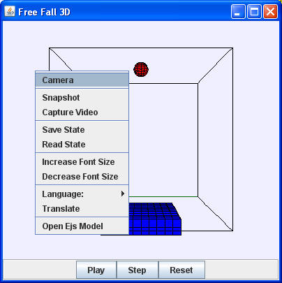

The model's 3D view has many built in features that can be accessed as the program is running.
It the ‘x’, ‘y’ or ‘z’ key is pressed during a mouse action, the actions affects only this coordinate. Note also that these actions are are modified if the 3D view is projected onto a 2D plane.
Right-clicking within a 3D view displays a popup menu as shown below.
